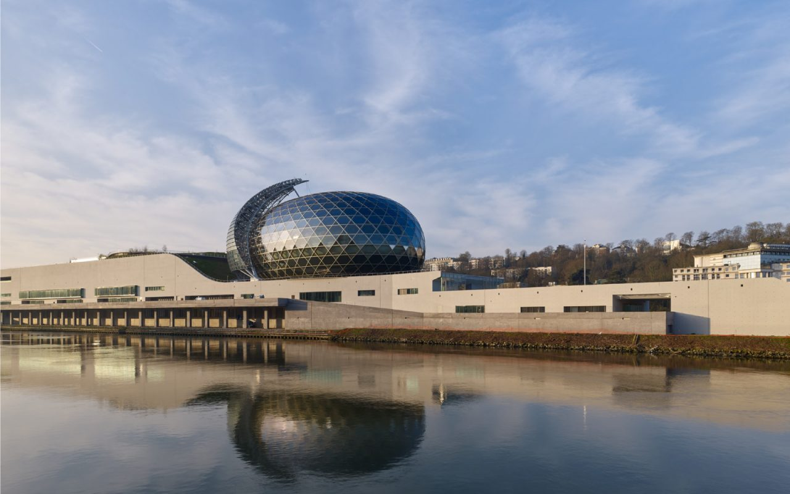

01Île Seguin — Boulogne-Billancourt
La Seine Musicale
Grande salle de spectacles et auditorium de 6 200 places sur l'Île Seguin. Dôme en verre et acier, socle minéral sur berges de Seine. Une référence architecturale signée Shigeru Ban et Jean de Gastines.
Ingénieur travaux — Tous corps d'état
Bouygues Construction